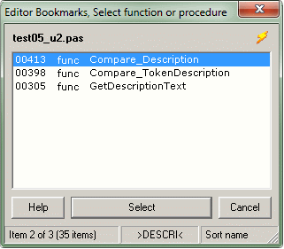

Editor BookmarksSelect function or procedure |
  
|
Editor BookmarksSelect function or procedure |
|
this page .. |
see also .. |
|---|---|
|
Select function or procedure |
|
Overview |
|
In this additional window you can select the position of the new bookmark in a list of all functions and procedures of the active file in the IDE. Each list item represents a possible bookmark position and shows the line number, method type and method name.
If deny double bookmarks is activated in options, all list items that have already been assigned to a bookmark are shown in a different font style and color and cannot be selected.

Details |
|
▪By repeatedly clicking on the lightning symbol, the selection list can be sorted by the attributes LineNumber, MethodType and MethodName. The active sort mode is displayed in the 4th panel of the statusbar.
▪In addition to sorting, the list can also be filtered. The filtering process is activated by entering letters of the filter mask. Only characters that enable successful filtering can be entered. With Backspace the filter is reduced character by character; with Delete the filter is removed. The active filter mask is shown in the 3rd panel of the statusbar.
▪The position of the new bookmark is transferred by double-clicking or using the Select button or pressing Return; after that the window closes automatically.
▪If you hold down the Ctrl key while double-clicking, the position of the new bookmark is transferred too, but the window remains open! This way, you can record several bookmarks very quickly.
▪With the Cancel button or pressing Escape you may close the window without selecting a new bookmark.
▪You can access help by pressing the F1 key or by clicking on the F1 symbol in the statusbar.